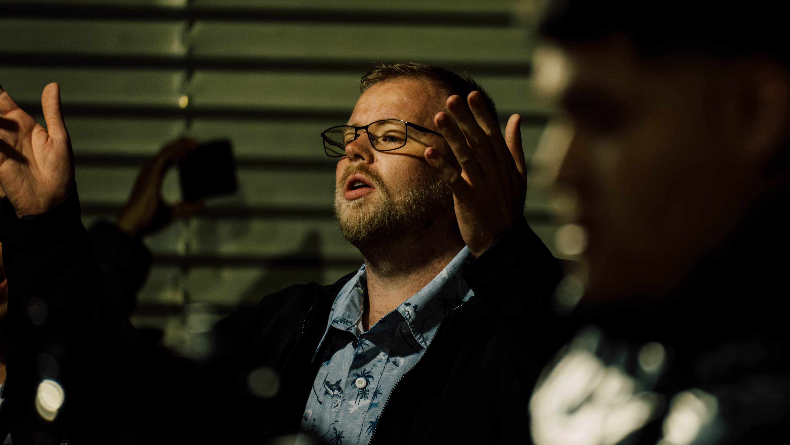

La Visión
The Vision
Hacer lo que Jesús Hizo
Doing What Jesus Did

01
Hacer lo que Jesús Hizo
Do What Jesus Did
Sanar enfermos, liberar cautivos, anunciar el evangelio del Reino con poder sobrenatural.
Heal the sick, free the captive, proclaim the Kingdom gospel with supernatural power.
"Sanen a los enfermos..." — Lucas 10:9

02
Cuidar a Quienes Jesús Cuidó
Care for Those Jesus Cared For
Los pobres, los huérfanos, las viudas. El evangelio es amor tangible que cambia vidas.
The poor, orphans, widows. The gospel is tangible love that changes lives.
"Visitar a los huérfanos y viudas..." — Santiago 1:27

03
Hacer Discípulos
Make Disciples
No construir una multitud, sino levantar hijos del Reino que transformen su generación.
Not building a crowd, but raising Kingdom sons who transform their generation.
"Hagan discípulos de todas las naciones." — Mateo 28:19